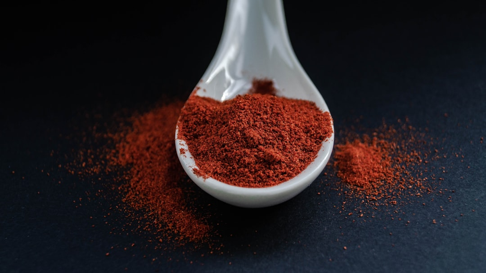

이트륨·마그네슘·비스무트, 中 통제 3호 묶음 현실화 임박

이트륨(Y)은 OLED 디스플레이 형광체, YAG 레이저 소재, 연료전지 안정화제로 쓰이며 한국의 중국산 의존도는 약 85~90%다. 중국은 전 세계 이트륨 생산의 약 70%를 담당한다. 2025년 들어 중국 세관의 이트륨 기반 산화물 수출 심사 기간이 기존 5~7일에서 15~20일로 늘어난 정황이 업계에서 보고되고 있다.
마그네슘은 경량 합금·항공우주 소재·자동차 부품의 핵심 소재로, 중국이 전 세계 생산의 약 87%를 차지한다. 2021년 중국 마그네슘 공급 차질 당시 유럽 자동차 업계가 생산 중단 위기를 겪었으며, 한국 자동차·항공부품 업계의 마그네슘 연간 수입액은 약 3,000억 원 규모다.
비스무트는 의약품·무독성 납 대체재·핵연료 냉각재로 쓰이며, 한국의 중국산 의존도는 90%를 넘는다. 중국은 전 세계 비스무트 생산의 80% 이상을 담당하며, 현재 국제 비스무트 가격은 kg당 약 6~7달러 수준이다. 중국이 수출 통제를 적용할 경우 갈륨 사례처럼 단기 2~3배 급등 가능성이 있다.
중국 상무부는 2025년 7월 이후 이중용도 소재 수출 심사를 강화하는 '공고 26호'를 시행 중이다. 이 기조 하에서 이트륨·마그네슘·비스무트 세 품목이 다음 공식 통제 후보군으로 분류될 개연성이 높다. 중국은 통제 품목 추가 시 평균 3~6개월의 예고 없이 즉시 시행한 전례가 있다.
이 세 소재가 동시 또는 순차 통제될 경우, 타격 산업군이 반도체·광섬유에서 디스플레이(이트륨), 자동차·항공(마그네슘), 의료기기·방산(비스무트)으로 확산된다. 즉 중국의 소재 통제 전선이 수평 확장되는 '3호 묶음' 시나리오다. 갈륨·게르마늄이 반도체·방산 밸류체인을 겨냥했다면, 이 세 소재는 한국 제조업 전체 스펙트럼을 동시에 흔들 수 있다.
공급자 시각에서 주목할 점은 '통제 전 사재기 수요 급증' 패턴이다. 갈륨·게르마늄 통제 때도 공식 발표 3개월 전부터 현물 재고 확보 경쟁이 발생했다. 이트륨·비스무트는 현재 그 전조 신호가 감지되는 단계다. 지금 재고를 확보한 기업과 그렇지 않은 기업 간 조달 단가 격차가 향후 6개월 내 가시화될 수 있다.
재고 선제 확보 기업 및 대체 소싱 경로 보유 기업: 마그네슘의 경우 노르웨이(REC Silicon 인근 제련소), 이스라엘(Dead Sea Magnesium), 미국(US Magnesium) 등 대안 공급처가 존재하나 단가는 중국산 대비 30~50% 높다. 이 프리미엄을 감당할 수 있는 기업이 통제 이후 공급 안정성 측면에서 우위를 갖는다.
소재 리사이클링 기업: 이트륨·비스무트는 스크랩 재활용 경로가 기술적으로 가능하다. 국내 희소금속 리사이클링 스타트업(예: 성일하이텍 등 이차전지 재활용 외 희소금속 계열)이 신규 사업 기회를 갖게 된다.
한국 OLED 디스플레이 소재 기업: 이트륨 기반 형광체·산화물을 사용하는 삼성SDI, LG화학, 덕산네오룩스 등이 직접 조달 리스크에 노출된다. 이트륨 산화물 국제 가격이 현재 kg당 약 3~4달러 수준인데, 통제 시 단기 5~10달러까지 상승 가능성이 있다.
국내 자동차·항공 부품 제조업체: 마그네슘 합금 가공 기업들은 원소재의 중국 의존도가 높아 통제 즉시 납기·단가 양면 압박을 받는다. 현대차·기아 1~2차 협력사 중 마그네슘 다이캐스팅 업체들이 가장 취약한 구간에 있다.
투자자라면 국내 희소금속 리사이클링·대체 소재 기업을 점검해야 한다. 이트륨의 경우 유럽·일본이 이미 2024년부터 비중국산 이트륨 공급 다변화에 예산을 투입하고 있어, 국내 관련 기업의 수출 기회도 동반 확대될 수 있다.
구매 담당자라면 이 세 소재에 대해 즉시 '90일 이상 안전 재고' 정책을 적용해야 한다. 갈륨·게르마늄 통제 학습 효과를 감안하면, 중국 공식 발표 이후 재고 확보는 이미 늦다. 특히 비스무트는 단가가 낮아 재고 비용 부담이 크지 않으므로 선제 확보의 비용 대비 효과가 높다.
실제 조달 현장에서는 — 이트륨 계열 산화물의 통관 지연이 이미 2025년 상반기부터 간헐적으로 보고되고 있다. 중국 세관이 공식 통제 선언 전 '심사 기간 연장'이라는 형태로 사실상의 사전 제한을 가하는 패턴은 갈륨 사례와 완전히 동일하다. 이를 단순한 행정 지연으로 해석하면 안 된다. 지금이 재고 확보의 마지막 적기다.
이 포스팅은 쿠팡 파트너스 활동의 일환으로 수수료를 제공받습니다.